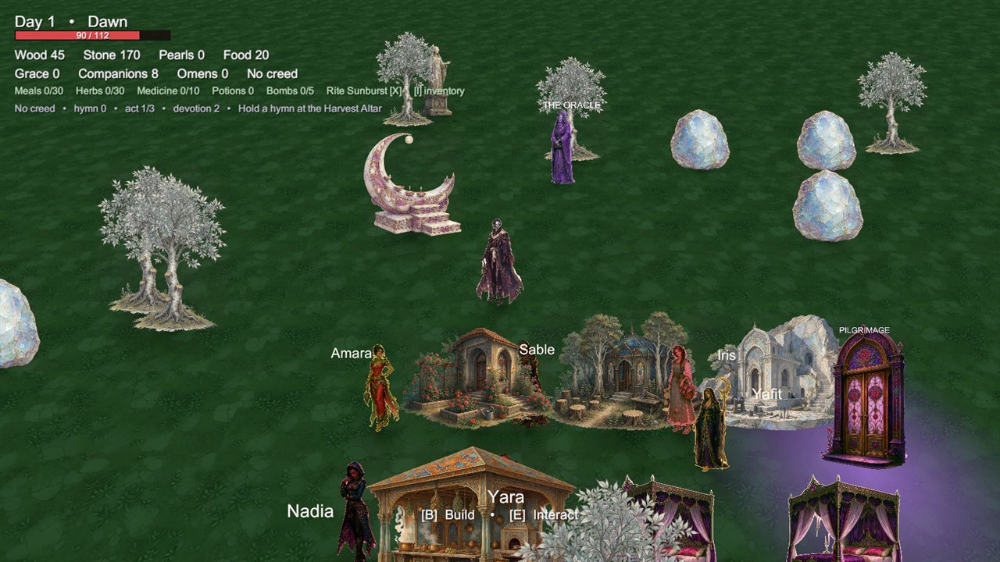

Chosen of the Harvest¶
A complete, code-driven action-roguelike + sanctuary-management framework for Unity 6 ready to reskin and ship.
Chosen of the Harvest is a production-ready Unity template: you build a sanctuary, recruit and manage a cast of followers, then descend into repeatable expeditions to break the Wardens who hoard the harvest. Every system is written in C# and generated at runtime, so there is no prefab wiring to maintain and no scene to repair reskin the art, retune the numbers, and it is your game.
-
Runs out of the box
Open the project, press Play. The hub, the followers, the HUD, the dungeon and the bosses assemble themselves from code.
-
Built to reskin
All presentation flows through catalogs and
Assets/ChosenOfTheHarvest/Resources, so replacing art, audio and copy never touches gameplay logic. -
Systems, not a demo
Save slots with migration and backup recovery, procedural floors, a follower simulation with needs and jobs, quests, meta-progression and localisation.
-
Documented
Every system has a guide page, and the public API surface is catalogued in the reference section.

What you get¶
| Area | Included |
|---|---|
| Unity version | 6000.6.6f1 (Unity 6), Universal Render Pipeline |
| Render / input | URP + 2D renderer, Unity Input System |
| Code | 39 C# files, ~13.7k lines, single ChosenOfTheHarvest namespace |
| Scenes | One bootstrap scene everything else is generated |
| Player | Movement, dodge with i-frames, 12 armaments, 3 rites, bombs, inventory |
| Combat | 12 creature archetypes, 3 elite modifiers, telegraphed attacks, projectiles, traps |
| Bosses | 3 Wardens with unique movesets, arenas, phases and Ascendant forms |
| Dungeon | Procedural floor plans, 3 acts / 6 floors / 92 rooms, keys, shops, puzzles |
| Sanctuary | 20 sanctum types, levels, condition, dirt, workers, player-built interiors |
| Followers | Needs, traits, loyalty, sickness, relationships, children, jobs, priorities |
| Progression | 18 omens, 18 heirlooms, 11 attire pieces, devotion meta-upgrades, 9-stage quest chain |
| Persistence | Save schema 4 3 slots + autosave, version migration, .bak recovery |
| Presentation | Fully code-generated HUD, photo mode, settings, key rebinding, mute |
| Text | 349 localisation keys, English + pseudo-locale, runtime hot switch |
| Content | 49 placeholder sprites + 21 placeholder audio clips, all replaceable |
Requirements¶
Before you start
- Unity 6000.6.6f1 or newer Unity 6 release (earlier Unity 6 releases will prompt an upgrade).
- Input System and Universal Render Pipeline packages both are
already declared in
Packages/manifest.json. - No third-party assets, plugins or paid dependencies. Everything included is generated in-house and covered by the template licence.
Pick a path¶
-
I want to run it
-
I want to reskin it
-
I want to change the game
-
I want to ship it
Support¶
- Browse the FAQ and Troubleshooting pages first.
- Check the Changelog for what changed in each release.
- Still stuck? Open an issue on GitHub with your Unity version, platform and the relevant log excerpt.